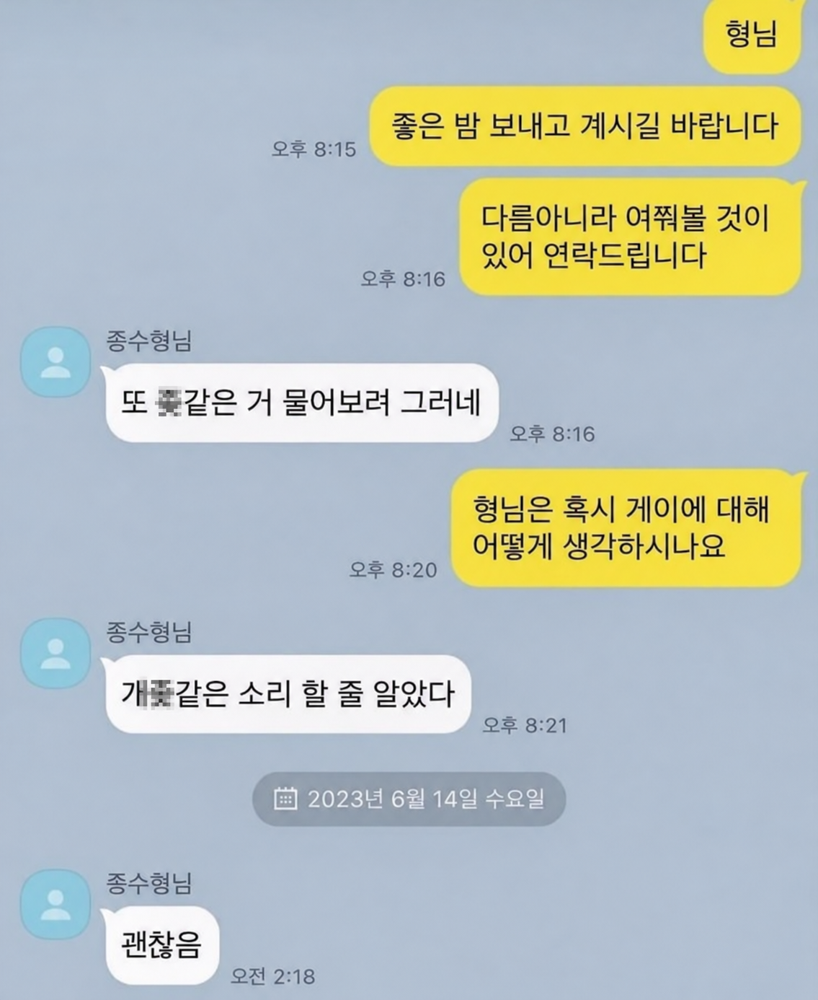

진짜 괜찮았던 형님
댓글
철면수심 알페스라니...
형길이심각합니다
도저히 형이라고 부를수 없는 크기
종수형♡ +1일
새벽동안 존나게 고민한듯
그새한번빨아줬네
종수는 누구야
저분은.. 누구신거야
보통 이런거 연예인 알페스같은거던데
또 어디 아이돌이셔??
경험주의
개좆같은 소리 할 줄 알았다
(게이랑 해보고 난 뒤)
괜찮음
윾시멘사
4시간 동안 뭔 일이 있던건가
빠라빱빱빱빠
술먹으면서 진지하게 생각해보고 쟤 정도면 괜찮겠다 하고 마음의 문과 똥꼬의 문을 연듯
6시간이다...
난 똥멍청이야 ㅠㅠ
마지막 결론과 그 전 답변 사이에 많은 거사(big events)가 느껴진다
종수씨.
사 실 적 시 어쩌고
무슨 일이 있었던거냐...
페페위에좆대가리그림자짤

혀 길이심각
쑤셔?
입으로 설득했네 했어
종수 형님?
이름이 나왔다 = RPS